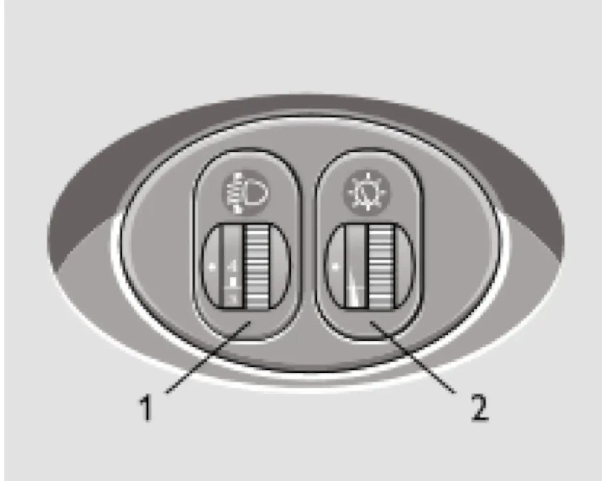

ОПИСАНИЕ АВТОМОБИЛЯ — II. Органы управления и приборы
Регуляторы
корректор фаррегулятор освещениянагрузка
На рисунке 19 показан блок регуляторов.

Электрокорректор фар. Вращением регулятора электрокорректора фар в зависимости от загрузки автомобиля производится регулировка угла наклона пучка света таким образом, чтобы не ослеплять водителей встречного транспорта. Совмещение неподвижной метки и цифры на регуляторе обеспечивает соответствующую регулировку фар при следующих вариантах загрузки автомобиля:
| Положение корректора фар | Загрузка автомобиля |
|---|---|
| 1 | Один водитель или водитель с пассажиром на переднем сиденье. |
| 2 | Все места заняты. |
| 3 | Все места заняты плюс груз в багажном отделении не более 75 кг. |
| 4 | Один водитель плюс груз в багажном отделении не более 100 кг. |
Регулятор освещения приборов. При включенном наружном освещении вращением регулятора регулируется яркость подсветки приборов, символов клавиш выключателей и шкалы пульта управления вентиляцией и отоплением салона.